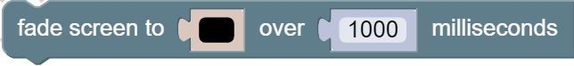
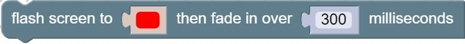
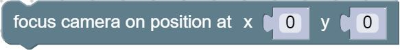
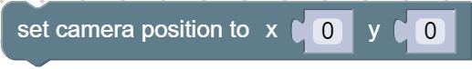
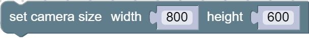
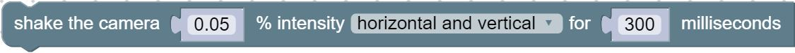

- Source:
Methods
-
<static> camera_fade(colour, time)
-

Fades the screen to the colour over the given amount of time. Check out Phaser documentation for a more in depth explanation.Parameters:
Name Type Description colourcolour to fade the screen to
timeNumber how long to take to fade
- Source:
Returns:
function toHexColor(color) { return color.replace("#", "0x"); } game.camera.fade(toHexColorFunc(colour), time, true); -
<static> camera_flash(colour, time)
-

Fills the game with the colour specified, then fades the colour away over the given amount of time. Check out Phaser documentation for a more in depth explanation.Parameters:
Name Type Description colourcolour to show
timeNumber how long to take to fade the colour away
- Source:
Returns:
function toHexColor(color) { return color.replace("#", "0x"); } game.camera.flash(toHexColorFunc(colour), time, true); -
<static> camera_focus_on(object)
-
Focus the camera on the given object. Check out Phaser documentation for a more in depth explanation.Parameters:
Name Type Description objectobject to focus on
- Source:
Returns:
game.camera.focusOn(object); -
<static> camera_focus_on_xy(posX, posY)
-

Focus the camera on the given location. Check out Phaser documentation for a more in depth explanation.Parameters:
Name Type Description posXNumber x position to focus on
posYNumber y position to focus on
- Source:
Returns:
game.camera.focusOnXY(posX, posY); -
<static> camera_reset()
-
Resets the camera by making it focus back to 0,0 and unfollowing all objects. Also resets any camera effects. Check out Phaser documentation for a more in depth explanation.- Source:
Returns:
game.camera.reset(); -
<static> camera_reset_fx()
-
Resets any active camera effects. Check out Phaser documentation for a more in depth explanation.- Source:
Returns:
game.camera.resetFX();
-
<static> camera_set_bounds_to_world()
-
Updates the camera bounds to match the game world bounds. Check out Phaser documentation for a more in depth explanation.- Source:
Returns:
game.camera.setBoundsToWorld(); -
<static> camera_set_position(posX, posY)
-

Sets the game camera position. Check out Phaser documentation for a more in depth explanation.Parameters:
Name Type Description posXNumber x position for the camera
posYNumber y position for the camera
- Source:
Returns:
game.camera.setPosition(posX, posY); -
<static> camera_set_size(width, height)
-

Sets the size of the camera viewing rectangle. Check out Phaser documentation for a more in depth explanation.Parameters:
Name Type Description widthNumber the width of the camera view port
heightNumber the height of the camera view port
- Source:
Returns:
game.camera.setSize(width, height); -
<static> camera_shake(intensity, direction, duration)
-

Creates a camera shake effect by moving the camera randomly at the given intensity for the given amount of time. Check out Phaser documentation for a more in depth explanation.Parameters:
Name Type Description intensityNumber how much the camera should move while shaking
directionwhich direction the camera should shake
durationNumber how long the camera should shake
- Source:
Returns:
game.camera.shake(intensity, duration, true, Phaser.Camera.direction); -
<static> camera_unfollow()
-
Stops the camera from following all objects. Check out Phaser documentation for a more in depth explanation.- Source:
Returns:
game.camera.unfollow(); -
<static> game_camera()
-
Returns the game camera. Check out Phaser documentation for a more in depth explanation.- Source:
Returns:
game.camera